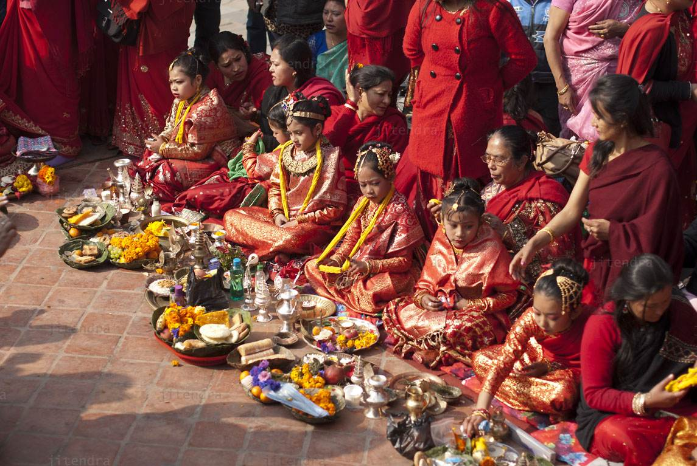

|
Nepalese culture is influenced by South Indian and Northern Tibetan culture. Several similarities can be seen in terms of clothing, way of life, language and food. A typical Nepalese meal consists of dal-bhat, lentils served with rice and other vegetables. This dish is consumed twice a day, once at dawn and once after dark. Between these two meals, there are several snacks such as chiura (beaten rice) and tea. Meat, eggs and fish are also consumed, especially in mountainous areas, where the diet is usually rich in protein. There are several alcoholic beverages based on millet which are widely consumed, including jaad and rakshi distillate.
Folklore is an integral part of Nepalese society. The rich oral tradition serves to explain the local life system, culture and beliefs, based on tales told by word of mouth about love, war, affections, ghosts and demons. Many of these stories are depicted in dances and songs. The Newar people are famous for their masquerade balls about gods and heroes. The music is performed on percussion instruments, accompanied by flutes or shawms and intense nasal vocal notes. Musical styles encompass pop, religious and popular song, among other styles.The sarangi, a four-stringed instrument originating in India, is widely used by itinerant buhoneros. At present there is a strong influence of Nepalese rock, an autochthonous side very popular among young people. Football is the most popular sport, followed by cricket and kabaddi.
The Nepali year begins in mid-April and is divided into 12 months. Saturday is the legal weekly holiday. Among the festivities are the National Day (until 2008 corresponded to the birth of the reigning monarch) on December 28, Prithvi Jayanti (January 11) and Martyr's Day (February 18). There are also festivals that mix Hinduism and mainstream Buddhism among the population, such as the Dashain in autumn and the Tihar at the end of the same season. Nepal has a rich tradition of ceremonies, including nwaran (or christening of a child), pasni (for the first time a child eats rice), bratabandha (a penance ceremony), and gupha for pre-teen boys and girls. The festival of bel bibaha is the "marriage" between a pre-teen girl and a tree to make her fertile.
|

|
|
Kumari, or Kumari Devi, or Living Durga – Nepal, is the tradition of worshipping a chosen virgin as manifestations of the divine female energy or devi in Dharmic religious traditions. The word Kumari is derived from Sanskrit meaning princess. The procession is akin to Indra or Sakra, taking Indrani to his celestial abode as his bride. The festival is celebrated during Kumari Jantra, which follows the Indra Jatra religious ceremony.
In Nepal, a Kumari is a prepubescent girl selected from the Shakya caste of the Nepalese Newari Buddhist community. The Kumari is revered and worshiped by some of the country's Hindus too. While there are several Kumaris throughout Nepal, with some cities having several, the best known is the Royal Kumari of Kathmandu, and she lives in the Kumari Ghar, a palace in the center of the city. The selection process for her is especially rigorous. As of 2017, the Royal Kumari is Trishna Shakya, aged three, installed in September 2017. Unika Bajracharya, selected in April 2014 as the Kumari of Patan, is the second most important living goddess.
In Kathmandu Valley, this is a particularly prevalent practice. It is believed to be the incarnation of Taleju, a manifestation of the goddess Durga.[3] When her first menstruation begins, it is believed that the deity vacates her body. Serious illness or a major loss of blood from an injury also causes loss of deity.
The Kumari tradition is only followed in a few cities in Nepal, which are Kathmandu, Lalitpur, Bhaktapur, Sankhu and Bungamati.The selection process and roles of the Kumari vary between the different towns.
|